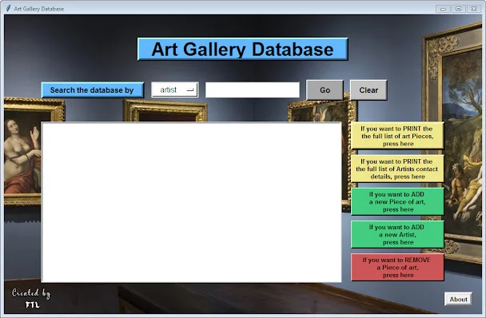

Art gallery database. Πόσο δύσκολο είναι να φτιάξεις μια βάση δεδομένων ?

Σε αυτό το πόστ θα βρείς τον κώδικα για τη δημιουργία μιας βάσης δεδομένων, με δυνατότητα εκατομμυρίων εγγραφών, εύκολα και γρήγορα στην Python.
Και φτάνω στην 150ή και τελευταία άσκηση, του εκπληκτικού βιβλίου "Python by Example" της Nichola Lacey. Εκεί ζητείται να φτιαχτεί μια πλήρως λειτουργική βάση δεδομένων, μιας υποθετικής γκαλερί, όπου σε ένα γραφικό περιβάλλον θα μπορείς να κάνεις αναζήτηση με βάση 4 διαφορετικά κριτήρια (καλλιτέχνης, μέσο ζωγραφικής, τιμή μεγαλύτερη ή μικρότερη από..) και θα μπορείς να προσθαφαιρείς έργα τέχνης ή στοιχεία επικοινωνίας καλλιτεχνών.
Χρήσιμοποιήθηκε η Tkinter για το γραφικό περιβάλλον, η SQLite για την βάση δεδομένων και 297 γραμμές κώδικα στην Python 3. Είναι το πρώτο project που φτιάχνεται κατά παραγγελία, έστω και σαν άσκηση ενός βιβλίου.
Δύσκολη άσκηση για ένα νέο προγραμματιστή και το πρώτο πρόβλημα που έπρεπε να ξεπεραστεί είναι το πως γίνεται ένα κουμπί αναζήτησης να καταλήγει σε 4 διαφορετικά functions, αντί για 1. Μετά ήταν το γραφικό περιβάλλον, που θα μπουν τα κουμπιά, που η αναζήτηση κλπ.
Το τελικό αποτέλεσμα δεν είναι κακό για 2 ημερών δουλειά. Ασχέτως του λιτού γραφικού περιβάλλοντος, σημασία έχει οτι δημιουργήθηκε μια πλήρως λειτουργική βάση δεδομένων που μπορεί να διαχειριστεί εκατομμύρια εγγραφές με πλήρη αναζήτηση και βάλε-βγάλε πρακτικά όλων των στοιχείων.
Ο κώδικας για ολόκληρο το πρόγραμμα είναι εδώ σαν άσκηση "150" και τρέχει σε οποιοδήποτε IDE χρησιμοποιεί ο καθένας για την Python, ωστε να την τροποποιήσει ανάλογα με τις ανάγκες του.